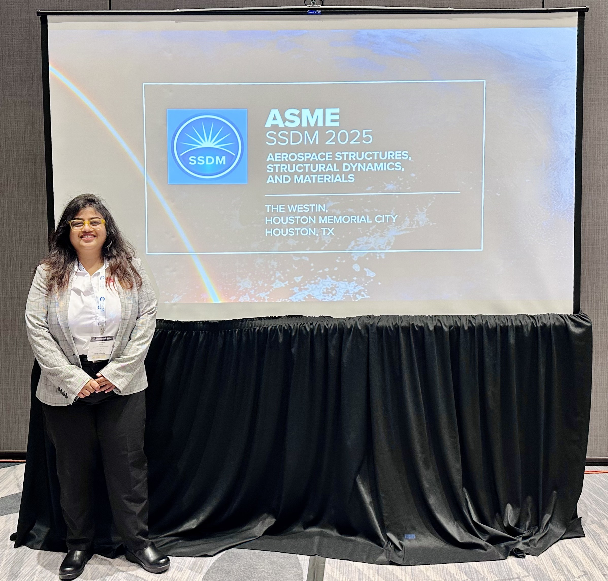
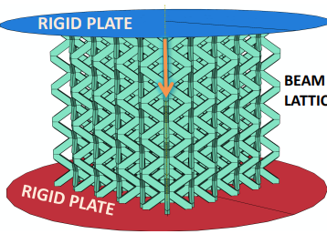

Projects

ASME SSDM Coneference 2025

Working on beam lattice structures, Multiscale modeling, and AI & ML at UT Arlington Research Institute.
Download ResumeI am Twinkle Kothari, a Ph.D. student in Aerospace Engineering at the University of Texas at Arlington, affiliated with the AIM³ Lab under the guidance of Dr. Xin Liu, and working with UTARI – IPPM.
My Ph.D. research focuses on beam lattice metamaterials, benefitting from finite element analysis, multiscale modeling, mechanical testing, AI & ML.
I enjoy solving complex structural challenges through a combination of simulation, experimental validation, and collaborative research.
Guided by Dr. Xin Liu, whose work in composite lattices continues to inspire my research.[🔗 Visit
Abaqus, Patran/Nastran, HyperWorks
Python, MATLAB, Wolfram Mathematica, Patran Command Language
Email: txk5319@mavs.uta.edu | LinkedIn